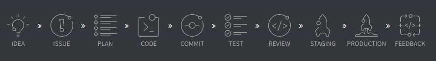
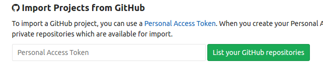

Is the one-stop-shop Gitlab CI fits all?
2017-07-20
You may have heard me saying that CI doesn’t matter in orchestration projects.
From one side it’s true: they do not make or break the project as the CI server’s role in those projects is nothing more than building the Docker image, pushing that to a registry and call a one liner to deploy. To some extent their job even got simplified since the many custom scripting one needed to achieve rolling or blue green deployments is now standardized in the orchestrator’s codebase.
I do acknowledge though that there are features in modern CI platforms that are game changing:
- Pipeline as code, versioned together with the source code
- and Dockerized build environments
make the process less brittle and enables Devs to do things that used to require permission or favors from the all mighty Ops.
While in my projects I often keep the CI platform out of scope - I just use what’s available - I wanted to take some modern CI for a spin. In this article I jot down my first impressions about Gitlab and its one-stop-shop approach of serving dev teams. Beware, I do have preconceptions.
Buying in to an ecosystem or piecing it together?
The above question is often top of my mind recently. While there are certain ecosystems I don’t mind buying into - since the benefits almost make me not think of the lock-in, in most cases I value control over anything else. AWS is a good example for the former, and pretty much everything else for the latter.
It’s top of mind for me as I offer Kubernetes deployments which are often considered as a Cloud agnostic approach that provide control and flexibility over cloud providers. Which is a huge thing, but it also comes with a cost. Navigating the quirks of not one, but two cloud providers is certainly a challenge for a small ops team.
Sometimes though, I wish I would be the person who just buys into an ecosystem like Rails, or .Net, or buys a suite or opts for a managed solution. The grass does seem greener there sometimes and I wonder about the real value of all the choices I have.
Give my control back!
Gitlab is one of those suites that seemed greener many times as they offer a self-hosted Github like experience for source code management, a CI server, a Wiki, a task manager and many more.

But that many more that scared me every time I looked at their marketing videos:
Let’s say you have an idea. And you discuss that on Mattermost, our company chat solution
Boom, in a snap they lost me. They want me to use all their crap?? Give my control back!
First impressions
But yesterday I made an effort to see for myself whats the fuzz about Gitlab, and most importantly: can I use only the parts that matter to me?
My first impressions as bullets in no particular order:
- Nice one-liner to start it locally with Docker. Just as you’d expect it in 2017
- Sleek UI, API keys, ssh keys, MFA all there, with nice explanations on the ui
- Straightforward to create a new project, no different than Github
- Vanity, but I’d be sad not having the activity card on my public Github profile. Especially as I want this in my livingroom
- Little too white, no strong strokes or contrast really, I guess I will get used to this
If you want to get a feel for it, check out the Gitlab source code on.. well, Gitlab. Very Meta.
Gitlab Pipelines
All in all, if you used Github before, you will find everything where you expect it to be. Good job Gitlab, for source code management Gitlab is a true alternative for Github. Let’s see if the CI offering is as strong too.
The Pipelines menu item naturally fits the UI. Pipelines belong to source repositories and in a microservice world where services should be backward compatible, their deployment is decoupled too, no need for coordinated deploys of multiple repositories anymore.

Clicking Pipelines for the first time Gitlab shows probably the best introductory text I’ve seen on both how to get started with Gitlab Pipelines, but also on good CI practices. I found my way around more easily than with CircleCI for example.
I had to create the .gitlab-ci.yml, add a Gitlab Runner and then the project was building on every git push.
If you’ve seen a Travis or Circle CI yaml, Gitlab’s yaml format probably looks familiar. In the example bellow first I define the build Docker image where the project is built (achiving a reproducible build experience), then I call a simple Gradle build command and a Docker push to the registry. That’s about it.
image: laszlocloud/build-image
before_script:
- docker login -u $DOCKER_USER -p $DOCKER_PASS
- docker pull laszlocloud/todomvc-springboot-backend
build:
script:
- ./gradlew clean build
- docker build --rm=false -t laszlocloud/todomvc-springboot-backend:${CI_COMMIT_SHA} .
- docker push laszlocloud/todomvc-springboot-backend:${CI_COMMIT_SHA}
Gitlab Runner
For the build to kick-off I also added a Gitlab Runner to Gitlab, which is basically a worker where the pipeline jobs are executed. “A Runner can be a virtual machine, a VPS, a bare-metal machine, a docker container or even a cluster of containers. GitLab and the Runners communicate through an API, so the only requirement is that the Runner’s machine has Internet access.”
See the various Runner types here.
Again it was a Docker one-liner plus a Docker exec to register the Runner with Gitlab
docker run -d --name gitlab-runner --restart always \
-v /srv/gitlab-runner/config:/etc/gitlab-runner \
-v /var/run/docker.sock:/var/run/docker.sock \
gitlab/gitlab-runner:latest
docker exec -it gitlab-runner bash
root@2d333fb8e7a4:/# sudo gitlab-runner register
Running in system-mode.
Please enter the gitlab-ci coordinator URL (e.g. https://gitlab.com/):
...
The verdict
The above didn’t take more than five hours in a summery pace, including the build image I created with Docker and Java installed and tackling an issue with running Docker builds in the the Docker based Gitlab Runner.
Although I did have dummy repositories prepared and worked with various CIs before I must say the experience was really nice. Everything was where it ought to be.
If I would start up something now I would probably just roll with Gitlab.
-
Their features are not too pushy, I didn’t have to go through hoops of they trying to promote parts of their stack I don’t need.
-
The builds were twice as fast as on my free CircleCI plan. On CircleCI the plumbing tasks take awful lot of time resulting my build taking at list two three minutes, while on this Gitlab instance it is almost exactly one minute.
-
Just a random signal: the open source Gnome project is also moving to Gitlab.
-
I find Gitlab’s execution polished. The various install options are documented, and they even make the migration from Github scary easy: it takes a token and clicking one button to migrate all your Github repos.

That’s it for today, but I’m not done yet. I’m super excited about Gitlab’s Review apps feature, plus I did see a menu item saying “Environments”. But more on these later.
Onwards!